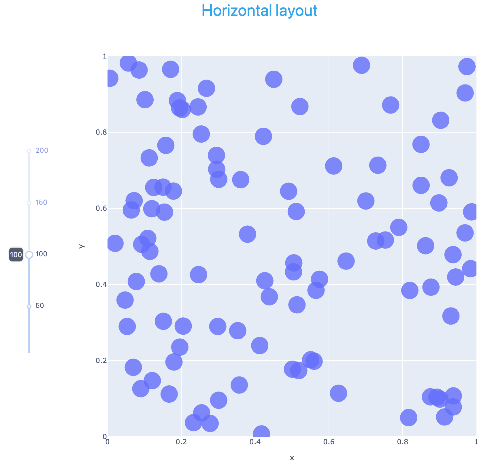
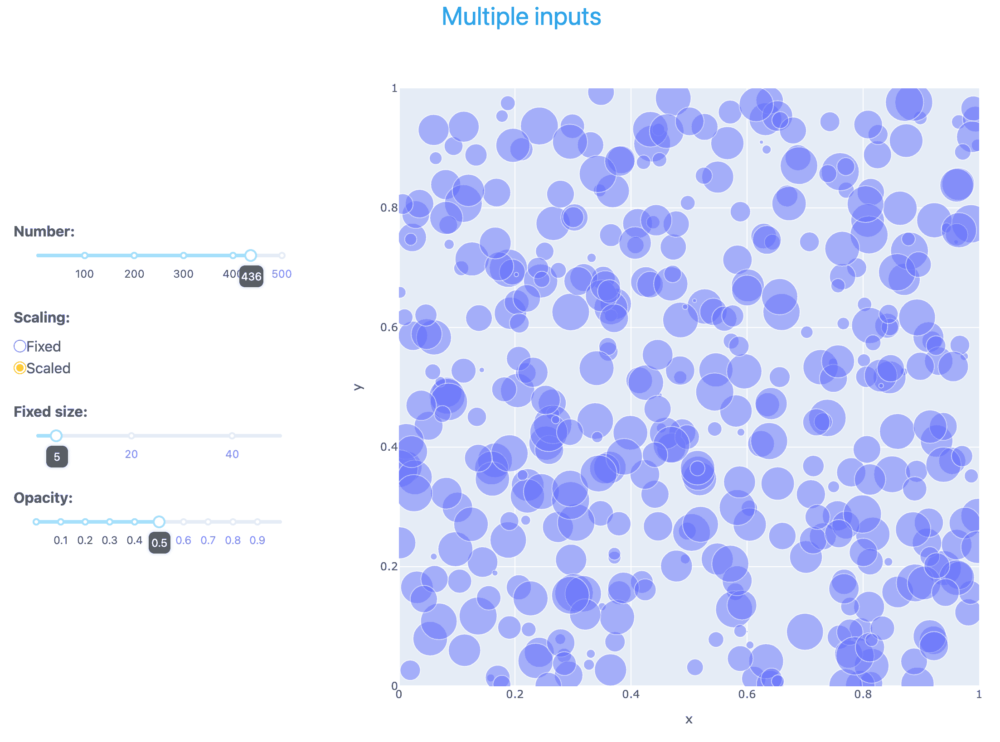
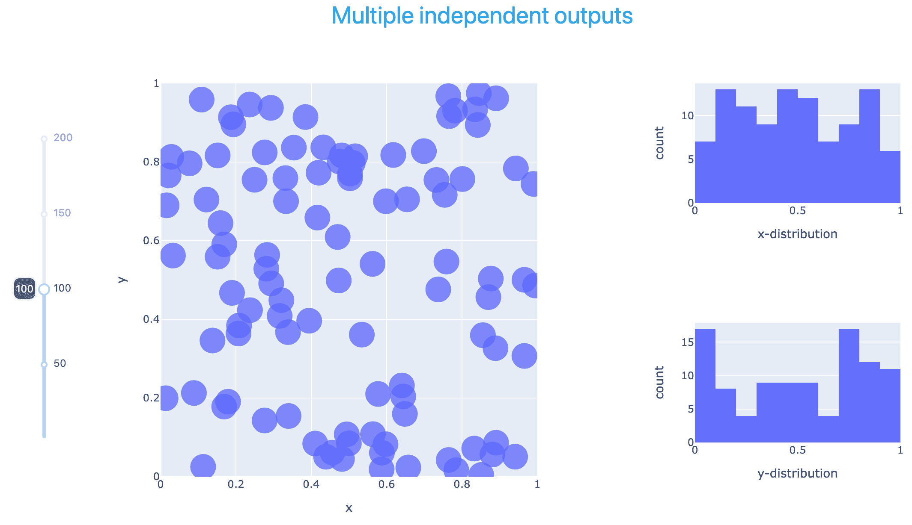
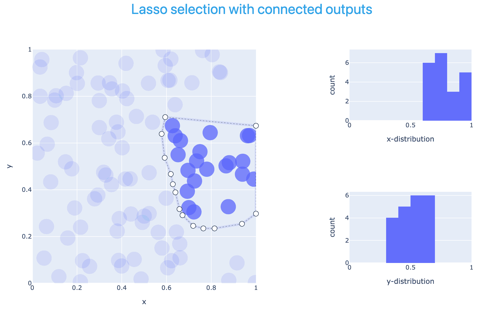
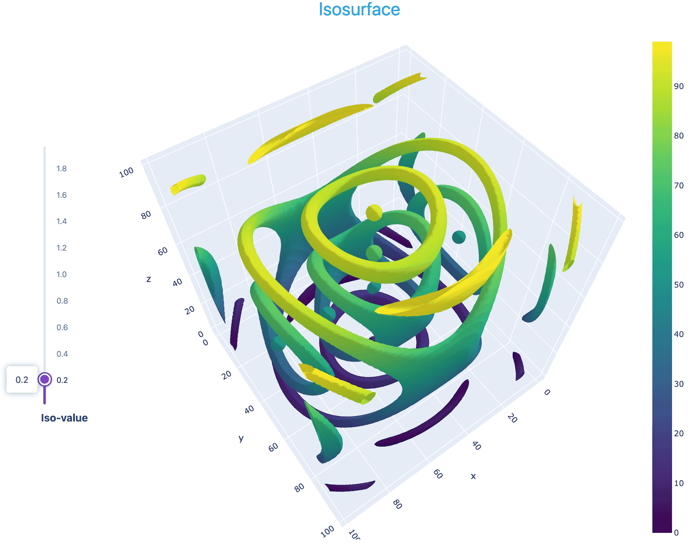
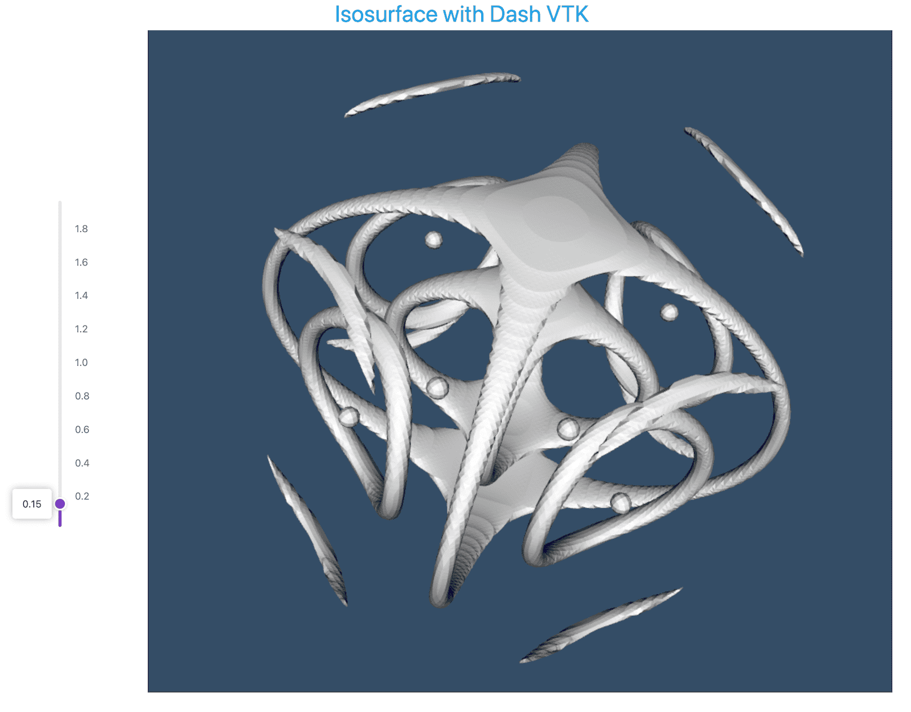
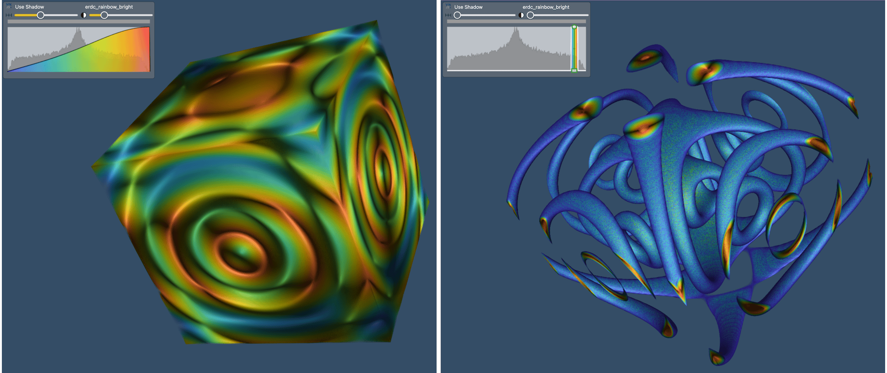
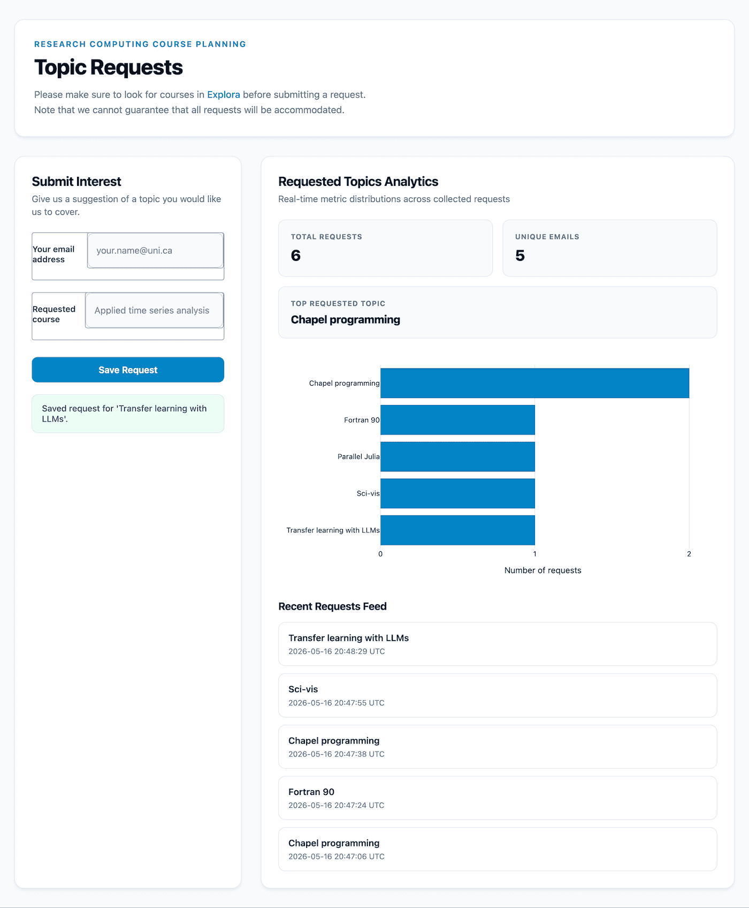

Interactive apps with Dash
Plotly Dash library (GitHub source) is a framework for making interactive data web applications.
- Dash Python User Guide https://dash.plotly.com
- https://dash.gallery/Portal has ~100 app examples
Some of its features:
- can mix and match multiple plots in a single web app
- multiple interactive controls: dropdowns and radio buttons (select one), checklists (select multiple), text/number input fields, sliders, etc.
- mouse selection in one plot can show in other plots,
- can create different tabs inside the app, with rules for switching between them,
- even can create an entire website with user guides, plots, code examples, etc.
To install the core Dash library, use your favourite installer, ideally inside a dedicated virtual environment, e.g.
$ uv pip install dash
$ pip install dash
$ conda install -c conda-forge dashWhile you can run Dash inside JupyterHub on the training cluster, I have not succeeded in getting jupyter_mode="inline" to work as intended for displaying interactive Dash apps inside a remote Jupyter notebook. By default, Dash starts a standalone web server, and JupyterHub (even when running on the same compute node) has no awareness of it.
There are manual ways to connect the two, but in practice the browser blocks this setup as mixed content for security reasons, since the notebook and the Dash app are served from separate web servers.
Long story short, I haven’t found a reliable, simple way to run Dash in a remote Jupyter notebook on the training cluster. On top of that, Dash doesn’t offer a clean way to stop the server — you have to kill the underlying Python process, which makes the setup even more awkward.
For these reasons, I will demo it locally on my computer – which is probably how you should develop Dash apps in the first place.
Here is how I installed Dash on my computer, along with some dependencies:
uv pip install dash # main Dash library
uv pip install dash-ag-grid # to display tabular data components
uv pip install dash-bootstrap-components # community-maintained styling library
uv pip install dash-mantine-components # community-maintained styling library
uv pip install dash_vtk # for VTK
uv pip install scikit-imageBaseline plot without Dash
On my computer I already have a setup that opens every Plotly plot in a new browser tab, using the setup mentioned at the start of this workshop. As a reminder, if you need to redirect your plot, use one of these options:
import plotly.io as pio
pio.renderers.default = 'notebook'
pio.renderers.default = 'browser'Let’s create a simple scatter plot with Graph Objects:
import plotly.graph_objs as go
import numpy as np
npoints = 100
trace = go.Scatter(x=np.random.rand(npoints),
y=np.random.rand(npoints),
mode='markers', marker=dict(size=[30]*npoints))
fig = go.Figure(data=[trace])
fig.update_layout(xaxis=dict(range=[0,1]), yaxis=dict(range=[0, 1]))
fig.show()Alternatively, we could create the same plot with Plotly Express:
import plotly.express as px
import numpy as np
npoints = 100
fig = px.scatter(x=np.random.rand(npoints),
y=np.random.rand(npoints),
range_x=[0,1], range_y=[0,1])
fig.update_traces(marker=dict(size=30, opacity=0.8))
fig.show()Baseline plot in Dash
To serve our Graph Objects plot inside Dash, we create a script scatter1.py:
# save this as scatter1.py
import plotly.graph_objs as go
import numpy as np
from dash import Dash, html, dcc # dcc = Dash Core Components library
npoints = 100
trace = go.Scatter(x=np.random.rand(npoints), y=np.random.rand(npoints),
mode='markers', marker=dict(size=[30]*npoints))
fig = go.Figure(data=[trace])
fig.update_layout(xaxis=dict(range=[0,1]), yaxis=dict(range=[0, 1]),
width=800, height=800)
app = Dash() # launch an instance of a Dash app
app.layout = [
html.Div(children='Dash scatter plot with GO'), # content container
dcc.Graph(figure=fig) # our plot container from Dash Core Components
]
app.run(debug=True) # run the instanceYou must run a Dash script by passing it to the Python interpreter:
python scatter1.pyBecause of how Dash is designed, running this script from a Python shell won’t work (the code will run, but nothing will be displayed on the output port). One particularly nice feature of Dash – that would be difficult to replicate in a shell – is hot reloading: whenever you change the script file, Dash automatically re-executes it and refreshes the app.
In this code above html.Div is a wrapper for standard html5 block-level container (content division element). It takes a list of content elements (or a single element) and CSS utility classes for styling. For an example of a list, replace
app.layout = [
html.Div(children='Dash scatter plot with Graph Objects'), # content container
dcc.Graph(figure=fig)
]with a list containing a title and a paragraph:
app.layout = [
html.Div(children=[html.H1("Dash scatter plot with Graph Objects"),
html.P("This is a paragraph.")]),
dcc.Graph(figure=fig)
]Alternatively, you can use Plotly Express functions with Dash:
# save this as scatter2.py
import plotly.express as px
import numpy as np
from dash import Dash, html, dcc, callback, Output, Input
npoints = 100
fig = px.scatter(x=np.random.rand(npoints), y=np.random.rand(npoints),
range_x=[0,1], range_y=[0,1], width=800, height=800)
fig.update_traces(marker=dict(size=30, opacity=0.8))
app = Dash()
app.layout = [
html.Div(children=html.H1("Dash scatter plot with Graph Objects")),
dcc.Graph(figure=fig)
]
app.run(debug=True)A single running app can have multiple instances, i.e. multiple users can connect to the same app at the same time, each user with their own interactive view and state.
Make it interactive
Let’s add two new elements to our script:
- a slider, to select the number of points, and
- a callback function
- takes
valueinput from the slider componentslider1 - returns
figureoutput to the graph componentg1
- takes
# save this as scatter3.py
import plotly.express as px
import numpy as np
from dash import Dash, html, dcc, callback, Output, Input
app = Dash()
app.layout = [
html.Div(children='Scatter plot with controls'), # HTML component
dcc.Slider(id='slider1', min=5, max=200, step=5, # slider component
value=100, # default starting value
marks={i: str(i) for i in range(0,201,50)},
tooltip={"placement": "bottom", "always_visible": True}
),
dcc.Graph(figure={}, id='g1') # graph component
]
@callback(
# all outputs must be listed first
Output(component_id='g1', component_property='figure'),
Input(component_id='slider1', component_property='value')
)
def update_graph(selected):
print('running the callback function for', selected)
fig = px.scatter(x=np.random.rand(selected), y=np.random.rand(selected),
range_x=[0,1], range_y=[0,1], width=800, height=800)
fig.update_traces(marker=dict(size=30, opacity=0.8))
return fig
app.run(debug=True)In this script, we moved the figure-drawing code into the callback function, since it depends on the input number of points and must be re-executed each time we move slider.
Inside the callback function, the argument name selected is used only inside the function.
Add some style
At the moment, our application has a very minimal appearance. While we could improve it with HTML and CSS, that approach assumes some familiarity with CSS. Dash also provides higher-level components that make styling much easier. A popular industry option is Dash Enterprise, which includes the Dash Design Kit, but it requires a commercial license starting at about $35k per year and is therefore not a practical option for us.
Fortunately, the Dash community has developed two open-source libraries – Dash Bootstrap Components and Dash Mantine Components – that make styling Dash apps much easier. They are easy to install:
$ uv pip install dash-bootstrap-components
$ uv pip install dash_mantine_componentsToday, I’ll use Dash Bootstrap Components, though the two libraries offer similar functionality.
# save this as scatter4.py
import plotly.express as px
import numpy as np
from dash import Dash, html, dcc, callback, Output, Input
import dash_bootstrap_components as dbc
external_stylesheets = [dbc.themes.CERULEAN]
app = Dash(__name__, external_stylesheets=external_stylesheets)
app.layout = dbc.Container([
dbc.Row([html.Div('Horizontal layout',
className="text-primary text-center fs-3")]), # colour+centring+size
dbc.Row([
dbc.Col([
dcc.Slider(id='slider1', min=5, max=200, step=5,
value=100,
vertical=True,
marks={i: str(i) for i in range(0,201,50)},
tooltip={"placement": "left", "always_visible": True}
),
], width="auto", align="center", className="ms-4"), # ms-4 is a left margin of size 4
dbc.Col([
dcc.Graph(figure={}, id='g1')
], width="auto"),
], justify="center") # centre both columns in the row
], fluid=True) # use full screen width, min margin padding
@callback(
Output(component_id='g1', component_property='figure'),
Input(component_id='slider1', component_property='value')
)
def update_graph(selected):
print('running the callback function for', selected)
fig = px.scatter(x=np.random.rand(selected), y=np.random.rand(selected),
range_x=[0,1], range_y=[0,1], width=800, height=800)
fig.update_traces(marker=dict(size=30, opacity=0.8))
return fig
app.run(debug=True)
Multiple inputs
Now, let’s add more controls – two extra sliders and radio buttons (only one selection) – for the total of 4 inputs to the callback function. All interactive controls are sitting inside a single column, and are all packaged into their own html.Div with mb-4 margins for nicer visual separation:
# save this as scatter5.py
import plotly.express as px
import numpy as np
from dash import Dash, html, dcc, callback, Output, Input
import dash_bootstrap_components as dbc
external_stylesheets = [dbc.themes.CERULEAN]
app = Dash(__name__, external_stylesheets=external_stylesheets)
app.layout = dbc.Container([
dbc.Row([html.Div('Multiple inputs', className="text-primary text-center fs-3")]),
dbc.Row([
dbc.Col([
html.Div([
html.Label("Number:", className="fw-bold mb-2"),
dcc.Slider(id='slider1', min=1, max=500, step=5,
value=100, vertical=False,
marks={i: str(i) for i in range(0,501,100)},
tooltip={"placement": "bottom", "always_visible": True}
),
], className="mb-4"),
html.Div([
html.Label("Scaling:", className="fw-bold mb-2"),
dcc.RadioItems(['Fixed', 'Scaled'], 'Fixed', id='scaling'),
], className="mb-4"),
html.Div([
html.Label("Fixed size:", className="fw-bold mb-2"),
dcc.Slider(id='slider2', min=1, max=50, step=1,
value=5, vertical=False,
marks={i: str(i) for i in range(0,81,20)},
tooltip={"placement": "bottom", "always_visible": True}
),
], className="mb-4"),
html.Div([
html.Label("Opacity:", className="fw-bold mb-2"),
dcc.Slider(id='slider3', min=0, max=1, step=0.1,
value=0.8, vertical=False,
marks={i/10: str(i/10) for i in range(0,10,1)},
tooltip={"placement": "bottom", "always_visible": True}
),
], className="mb-4"),
], width=3, align="center", className="ms-4"),
dbc.Col([
dcc.Graph(figure={}, id='g1')
], width="auto"),
], justify="center") # centre all columns in the row
], fluid=True)
@callback(
Output(component_id='g1', component_property='figure'),
Input(component_id='slider1', component_property='value'),
Input(component_id='scaling', component_property='value'),
Input(component_id='slider2', component_property='value'),
Input(component_id='slider3', component_property='value')
)
def update_graph(npoints, scaling, pointSize, opacity):
print('running the callback function for', npoints, scaling, pointSize, opacity)
np.random.seed(5) # to generate the same sequence every time
match scaling:
case "Fixed":
fig = px.scatter(x=np.random.rand(npoints), y=np.random.rand(npoints),
range_x=[0,1], range_y=[0,1], width=800, height=800)
fig.update_traces(marker=dict(size=pointSize, opacity=opacity))
case "Scaled":
fig = px.scatter(x=np.random.rand(npoints), y=np.random.rand(npoints),
range_x=[0,1], range_y=[0,1], width=800, height=800,
size=np.random.rand(npoints), size_max=30)
fig.update_traces(marker=dict(opacity=opacity))
return fig
app.run(debug=True)
Multiple independent outputs
Now we go back to a single, vertical slider for the number of points, and add two histogram plots showing the distribution of all points in the scatter plot along the x- and y-axis, respectively. The slider affects all three plots – and this is the only connection between the plots. For example, if you zoom in on an area in the scatter plot, the histogram plots will not change.
# save this as scatter6.py
import plotly.express as px
import numpy as np
from dash import Dash, html, dcc, callback, Output, Input
import dash_bootstrap_components as dbc
external_stylesheets = [dbc.themes.CERULEAN]
app = Dash(__name__, external_stylesheets=external_stylesheets)
app.layout = dbc.Container([
dbc.Row([html.Div('Multiple independent outputs', className="text-primary text-center fs-3")]),
dbc.Row([
dbc.Col([
dcc.Slider(id='slider1', min=1, max=200, step=5,
value=100,
vertical=True,
marks={i: str(i) for i in range(0,201,50)},
tooltip={"placement": "left", "always_visible": True}
),
], width="auto", align="center", className="ms-4"), # ms-4 is a left margin of size 4
dbc.Col([
dcc.Graph(figure={}, id='g1')
], width="auto"),
dbc.Col([
dcc.Graph(figure={}, id='g2'),
dcc.Graph(figure={}, id='g3')
], width="auto"),
], justify="center"), # centre both columns in the row
], fluid=True)
@callback(
Output(component_id='g1', component_property='figure'),
Output(component_id='g2', component_property='figure'),
Output(component_id='g3', component_property='figure'),
Input(component_id='slider1', component_property='value')
)
def update_graph(selected):
print('running the callback function for', selected)
xpos = np.random.rand(selected)
ypos = np.random.rand(selected)
fig1 = px.scatter(x=xpos, y=ypos, range_x=[0,1], range_y=[0,1], width=600, height=600)
fig1.update_traces(marker=dict(size=30, opacity=0.8))
fig2 = px.histogram(x=xpos, nbins=10, width=400, height=280)
fig2.update_traces(xbins=dict(start=0, end=1, size=0.1)) # fixed number of bins
fig2.update_xaxes(title_text='x-distribution', range=[0, 1]) # fixed x-limits
fig3 = px.histogram(x=ypos, nbins=10, width=400, height=280)
fig3.update_traces(xbins=dict(start=0, end=1, size=0.1)) # fixed number of bins
fig3.update_xaxes(title_text='y-distribution', range=[0, 1]) # fixed x-limits
return fig1, fig2, fig3
app.run(debug=True)
Connected plots
Let’s remove the slider, and add a Lasso selection in the scatter plot and show the x- and y-histograms only for the points selected with Lasso. If there is no selection, add a text “Select points to see details” to the histograms.
The callback function has:
- two outputs (two histogram plots)
- one input: special input
selectedDatafrom the graph componentg1– we call this argumentselectedPointsinside the callback function
# save this as scatter7.py
import plotly.express as px
import numpy as np
from dash import Dash, html, dcc, callback, Output, Input
import dash_bootstrap_components as dbc
external_stylesheets = [dbc.themes.CERULEAN]
app = Dash(__name__, external_stylesheets=external_stylesheets)
npoints = 100
xpos = np.random.rand(npoints)
ypos = np.random.rand(npoints)
fig1 = px.scatter(x=xpos, y=ypos, range_x=[0,1], range_y=[0,1], width=600, height=600)
fig1.update_traces(marker=dict(size=30, opacity=0.8))
fig1.update_layout(dragmode='lasso')
app.layout = dbc.Container([
dbc.Row([html.Div('Lasso selection with connected outputs', className="text-primary text-center fs-3")]),
dbc.Row([
dbc.Col([
dcc.Graph(figure=fig1, id='g1')
], width="auto"),
dbc.Col([
dcc.Graph(figure={}, id='g2'),
dcc.Graph(figure={}, id='g3'),
], width="auto"),
], justify="center"), # centre both columns in the row
], fluid=True)
@callback(
Output(component_id='g2', component_property='figure'),
Output(component_id='g3', component_property='figure'),
Input('g1', 'selectedData')
)
def update_graph(selectedPoints):
print('running the callback function for', selectedPoints)
if selectedPoints is None:
xsel, ysel = [], []
xtitle = "Select points to see details"
ytitle = xtitle
else:
xsel = [p['x'] for p in selectedPoints['points']] # x of selected points
ysel = [p['y'] for p in selectedPoints['points']] # y of selected points
xtitle, ytitle = "x-distribution", "y-distribution"
fig2 = px.histogram(x=xsel, nbins=10, width=400, height=280)
fig2.update_traces(xbins=dict(start=0, end=1, size=0.1)) # fixed number of bins
fig2.update_xaxes(title_text=xtitle, range=[0, 1]) # fixed x-limits
fig3 = px.histogram(x=ysel, nbins=10, width=400, height=280)
fig3.update_traces(xbins=dict(start=0, end=1, size=0.1)) # fixed number of bins
fig3.update_xaxes(title_text=ytitle, range=[0, 1]) # fixed x-limits
return fig2, fig3
app.run(debug=True)
3D contours
In this section, we demonstrate two approaches to generating iso-contours from a 3D dataset in a unit cube:
- via Plotly’s standard
plotly.graph_objects.Mesh3dfunction and - via Dash VTK component library.
We start with a classical Graph Objects plot ported to Dash:
# save this as contour.py
from dash import Dash, html, dcc, callback, Output, Input
import dash_bootstrap_components as dbc
import plotly.graph_objects as go
from skimage import measure
from netCDF4 import Dataset
from pathlib import Path
filename = str(next((Path.home()/"training").rglob("data/sineEnvelope.nc")))
rootgrp = Dataset(filename, "r", format="NETCDF4")
rho = rootgrp.variables['density'][:]
rootgrp.close()
external_stylesheets = [dbc.themes.CERULEAN]
app = Dash(__name__, external_stylesheets=external_stylesheets)
app.layout = dbc.Container([
dbc.Row([html.Div('Isosurface', className="text-primary text-center fs-3")]), # colour+centring+size
dbc.Row([
dbc.Col([
dcc.Slider(id='slider1', min=0.05, max=1.95, step=0.05, value=0.5, vertical=True,
marks={i/10: str(i/10) for i in range(0, 21, 2)},
tooltip={"placement": "left", "always_visible": True}
),
html.Label("Iso-value", className="text-center w-100 fw-bold mt-2")
], width=1, align="center", className="ms-4"), # ms-4 is a left margin of size 4
dbc.Col([
dcc.Graph(figure={}, id='g1')
], width="auto"),
], justify="center") # centre both columns in the row
], fluid=True) # use full screen width, min margin padding
@callback(
Output(component_id='g1', component_property='figure'),
Input(component_id='slider1', component_property='value')
)
def update_graph(selected):
print('running the callback function for', selected)
# generate marching cubes
vertices, triangles, normals, values = measure.marching_cubes(rho, selected) # create an isosurface
print(format(vertices.shape[0], ","), "vertices and", format(triangles.shape[0], ","), "triangles")
fig = go.Figure(data=[
go.Mesh3d(
x=vertices[:,0], y=vertices[:,1], z=vertices[:,2],
i=triangles[:, 0], j=triangles[:, 1], k=triangles[:, 2],
intensity=vertices[:, 2], # color by z-height
colorscale="Viridis", showscale=True
)
])
fig.update_layout(width=900, height=800,
scene=dict(aspectmode="data",
uirevision="keep-camera"), # preserve rotation, zoom, pan across graph update
margin=dict(t=20, b=10, l=10, r=10)) # margins around the figure
return fig
app.run(debug=True)
Next, we try Dash VTK, which lets you run a custom VTK pipeline inside a Dash server and then pushes the resulting visualization to the client. In this implementation, we compute the polygonal mesh forming the iso-contour surface outside VTK, and then use Dash VTK to render this mesh:
# save this as vtk-contour.py
from dash import Dash, html, dcc, callback, Output, Input
import dash_bootstrap_components as dbc
import dash_vtk
from skimage import measure
from netCDF4 import Dataset
import numpy as np
from pathlib import Path
filename = str(next((Path.home()/"training").rglob("data/sineEnvelope.nc")))
rootgrp = Dataset(filename, "r", format="NETCDF4")
rho = rootgrp.variables['density'][:]
rootgrp.close()
app = Dash(__name__, external_stylesheets=[dbc.themes.CERULEAN])
app.layout = dbc.Container([
dbc.Row([html.Div('Isosurface with Dash VTK', className="text-primary text-center fs-3")]), # colour+centring+size
dbc.Row([
dbc.Col([
dcc.Slider(
id='slider1', min=0.05, max=1.95, step=0.05, value=0.5, vertical=True,
marks={i/10: str(i/10) for i in range(0, 21, 2)},
tooltip={"placement": "left", "always_visible": True}
),
html.Label("Iso-value", className="text-center w-100 fw-bold mt-2")
], width=1, align="center", className="ms-4"),
dbc.Col([
html.Div(
dash_vtk.View(
dash_vtk.GeometryRepresentation(
dash_vtk.Mesh(id="vtk-mesh", state={})
)
),
style={"width": "900px", "height": "800px"}
)
], width="auto"),
], justify="center")
], fluid=True)
@callback(
Output('vtk-mesh', 'state'),
Input('slider1', 'value')
)
def update_graph(selected):
print(f'Generating isosurface for: {selected}')
# generate marching cubes
vertices, triangles, normals, values = measure.marching_cubes(rho, selected)
print(format(vertices.shape[0], ","), "vertices and", format(triangles.shape[0], ","), "triangles")
# Dash VTK expects a specific dictionary format for the mesh; build it manually
padding = np.ones((triangles.shape[0], 1), dtype=np.int32) * 3
cells = np.hstack((padding, triangles)).ravel()
return {
"mesh": {
"points": vertices.ravel().astype(np.float32),
"polys": cells.astype(np.int32),
}
}
app.run(debug=True)Alternatively, you could write a code to compute the iso-surface with VTK library calls.

3D volumetric view
For the same NetCDF dataset, we can generate a volumetric view (giving here a much simpler code without styling):
# save this as vtk-volume.py
from dash import Dash, html
import dash_vtk
from netCDF4 import Dataset
from pathlib import Path
filename = str(next((Path.home()/"training").rglob("data/sineEnvelope.nc")))
rootgrp = Dataset(filename, "r", format="NETCDF4")
rho = rootgrp.variables['density'][:]
rootgrp.close()
app = Dash(__name__)
app.layout = html.Div(
dash_vtk.View([
dash_vtk.VolumeRepresentation([
dash_vtk.VolumeController(), # UI to adjust opacity/color mapping
dash_vtk.ImageData(
dash_vtk.PointData([
dash_vtk.DataArray(
registration="setScalars",
values=rho.flatten() # must be a 1D flat array
)
]),
dimensions=rho.shape,
origin=[0, 0, 0],
spacing=[1, 1, 1]
)
])
]),
style={"height": "100vh", "width": "100%"}
)
app.run(debug=True)
Passing UI state to a callback function
In certain cases, a callback function at runtime might need a value from the UI, e.g. text pasted into the text box. You can pass these values via a State input. By itself, typing text inside the text box does not trigger the callback function, but clicking the button does.
# save this as state.py
from dash import Dash, dcc, html
from dash.dependencies import Input, Output, State
app = Dash(__name__)
app.layout = html.Div([
html.H3("Dash Callback State Example"),
dcc.Input(id="input-text", type="text", placeholder="Type something...", value=""),
html.Button(id="submit-button", n_clicks=0, children="Submit"),
html.Hr(),
html.Div(id="output-container")
])
@app.callback(
Output("output-container", "children"),
Input("submit-button", "n_clicks"), # n_clicks change triggers the callback
State("input-text", "value") # Passes data without triggering
)
def update_output(numClicks, textValue):
if numClicks == 0:
return "Enter text and click submit."
return f"Button clicked {numClicks} times. The latest text is: '{textValue}'"
app.run(debug=True)- Every time the button is clicked, its
n_clicksvalue changes, which triggers the callback function. - When the function runs, Dash looks up the current value (state) of the text box and passes it into
textValue. However, typing inside the text box does not trigger the function on its own.
Dashboard collecting topic requests
In this example, we show a dashboard for collecting training topic requests. It includes two text input fields using dcc.Input, and all submissions are stored in the file courseInterest.parquet. This file persists across dashboard restarts, with new entries appended over time. The dashboard validates both the email and topic fields, including checking the email format; if both appear valid, the submission is accepted. On the right, it also displays request analytics, which I will demo on my laptop:
cd ~/training/dash
python topicRequest.py
I am not showing the source code, as this dashboard was created with an LLM (so you can easily create your own!) in about 10 minutes and is around 560 lines of code, most of it consisting of CSS styling for a polished appearance.
To read the results, I simply run:
uv pip install pandas pyarrowimport pandas as pd
df = pd.read_parquet('courseInterest.parquet')
print(df)List of controls
The Dash Core Components (dcc) library offers the following interactive controls:
| Method | Description |
|---|---|
| dcc.Dropdown | select one item |
| dcc.RadioItems | select one item |
| dcc.Checklist | select multiple items |
| dcc.DatePickerRange | calendar to select start / end dates |
| dcc.DatePickerSingle | calendar to select a single date |
| dcc.Slider | slider with one handle |
| dcc.RangeSlider | slider with two handles, to specify a range |
| dcc.Input | text/number input field |
| dcc.Textarea | multi-line text input box |
| dcc.Upload | drag-and-drop area for uploading files |
| dcc.Tabs | switch between different dashboard tabs |
Few more “hidden” controls:
| Method | Description |
|---|---|
| dcc.Interval | hidden component that triggers a callback periodically |
| dcc.Location | tracks the address bar in your web browser |
| dcc.Store | client-side storage of different portions of the URL |
Publishing / hosting
A Dash app requires a server – you can’t just save its output to a standalone HTML5 file. If you want to share your Dash app with the world, you have several options:
- spin up a Dash app on a server
- you can use your own VM, e.g. build one for free on one of our Clouds systems,
- you can pay to use a VM in the commercial cloud,
- you can run a Dash app on your research group’s existing web server using an unused port,
- use Plotly Cloud: its free tier allows one running app at a time, or
- use Dash Enterprise paid options which are very expensive, so probably not a real option for us.
With Plotly Cloud, there are two possible workflows: from your running app or via their portal. For the former you’ll need to install Plotly Cloud extension with uv pip install "dash[cloud]" (exact command depends on your Python setup) and then start the app with app.run(debug=True) and use the dev tools UI in the lower right corner. To replace your currently running app (there is a limit of 1) you need to open the app settings, or click Open Settings in Plotly Cloud | General | Delete Dash app, and only then you can publish a new app.
I personally find it easiest to use their web UI and drag and drop my Dash *.py script files. Also note that – when publishing to Plotly Cloud – it appears it won’t run the community styling libraries: I tried Dash Bootstrap Components and saw no formatting.
Comparison to Shiny for Python
Release timeline:
- 2012 Shiny for R: makes it easy to build interactive web apps directly from R
- 2013 Plotly launch: interactive plots for the web (compare to static Matplotlib plots)
- 2015 ✅ Plotly Dash: adds a server component to Plotly
- 2022 ✅ Shiny for Python
- 2022 ✅ Kitware Trame v1 (now on v3)
While all three frameworks allow you to build fully interactive web applications entirely in Python without deep web development (HTML/JS) expertise, they come from completely different paradigms, architectural foundations, and primary target domains. Here we compare Plotly Dash and Shiny for Python:
| Feature | Plotly Dash | Shiny for Python |
|---|---|---|
| Programming model | functional / declarative | imperative / reactive |
| Input | dcc.Graph takes Plotly Express and Graph Objects figure, Python dictionaries; there is converter for Matplotlib/Seaborn figures; there are wrappers for VTK, Leaflet |
@render.plot Matplotlib/Seaborn figures; @render.widget Plotly figure, PyVista/VTK viewer, Altair chart; @render.data_frame Pandas/Polars dataframes; @render.text Python str; @render.image dictionary with a local image file path |
| Reactivity style | explicit callbacks with specified Input/Output/State | transparent reactivity |
| State management | stateless Python backend and a stateful React.js frontend that looks for any Python callbacks that have that component property listed as Input or State | stateful (server-side session management) |
| UI definition | static component tree (HTML/Components) | dynamic UI (UI as an output) |
| Execution flow | event-driven (triggered by specific IDs) | dependency-driven (automatic graph resolution) |
| Server-side Python | always need a backend Dash server | backend Shiny server |
| Client-side Python (browser) | not possible at the moment; use Plotly Express with standalone HTML5 for basic interactivity | can run Python code via WebAssembly using Shinylive model: the browser becomes the server; some restrictions, including your data size |
| Deployment options | your own server in a VM or parallel to an existing web server, Plotly Cloud (paid with a free tier) | your own server, Posit Connect Cloud (paid with a free tier), Shinylive on GitHub Pages, Netlify, or your own website, integration with Quarto dashboards |
| Best for | large-scale apps | rapid prototyping and complex data dependencies |